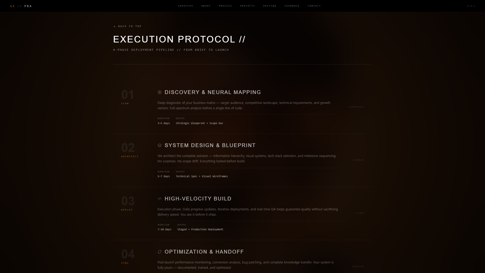
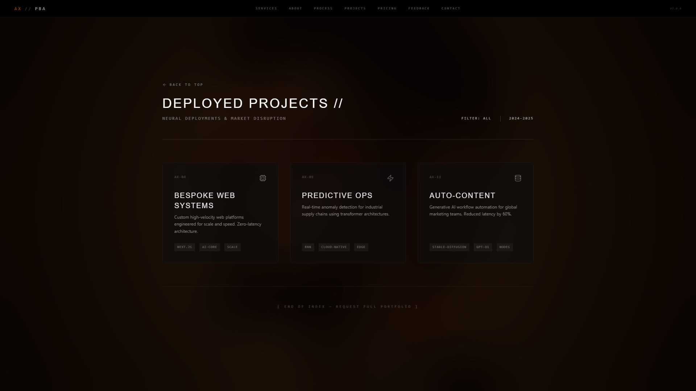
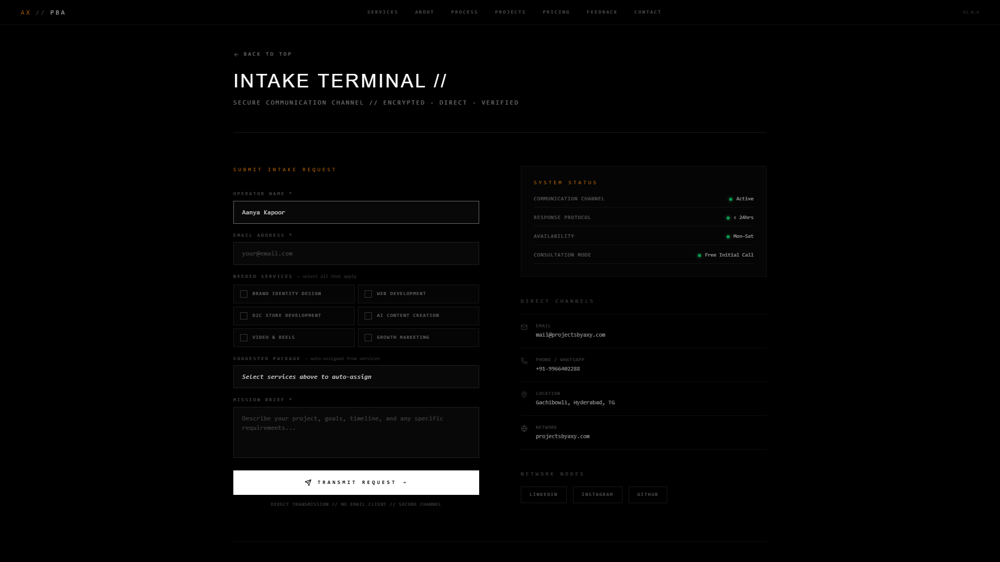
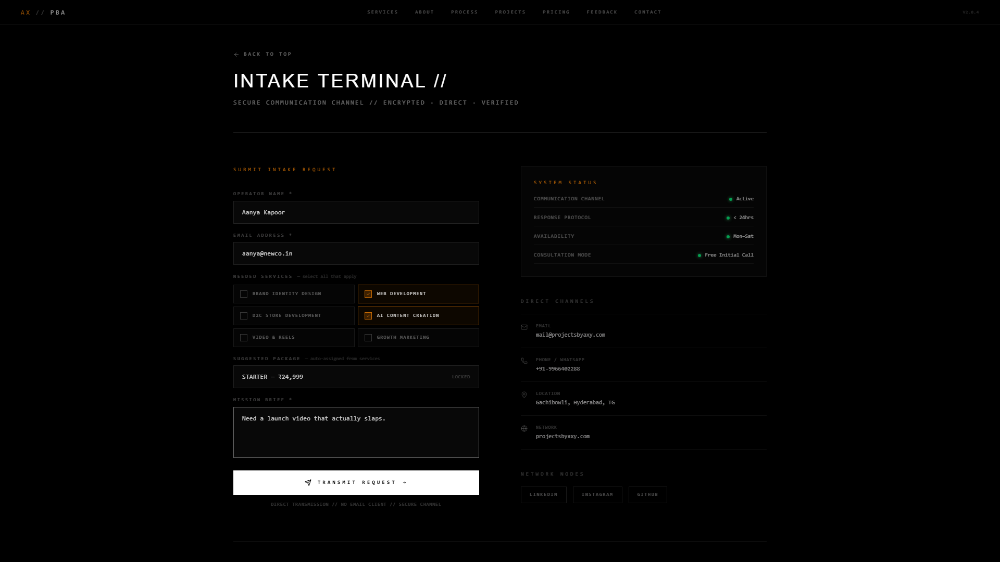
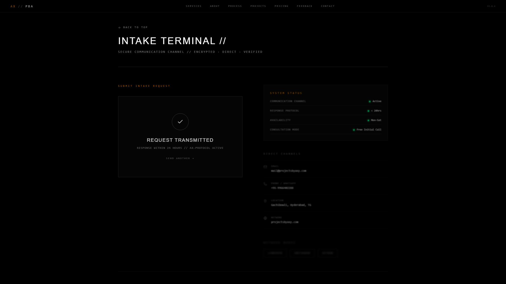

AX // PBA
We Don't Build
Websites.
ProjectsByAxy
// AI Solutions
Real Outcomes
+43%
Not Vanity Metrics.

6 Services. 1 Team.

4-Phase Pipeline.

Shipped & Deployed.
This Isn't A Template.





Submit In Seconds.
Request Transmitted.
ProjectsByAxy
Shift your reality.